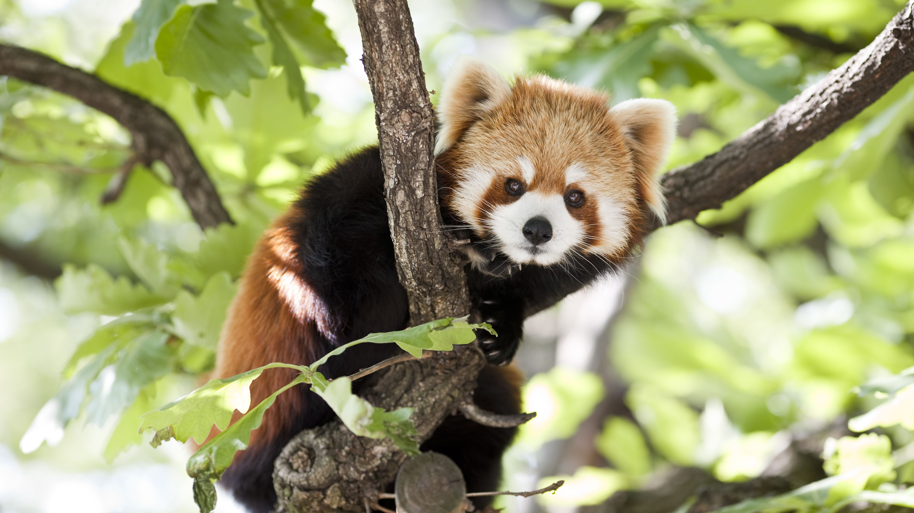
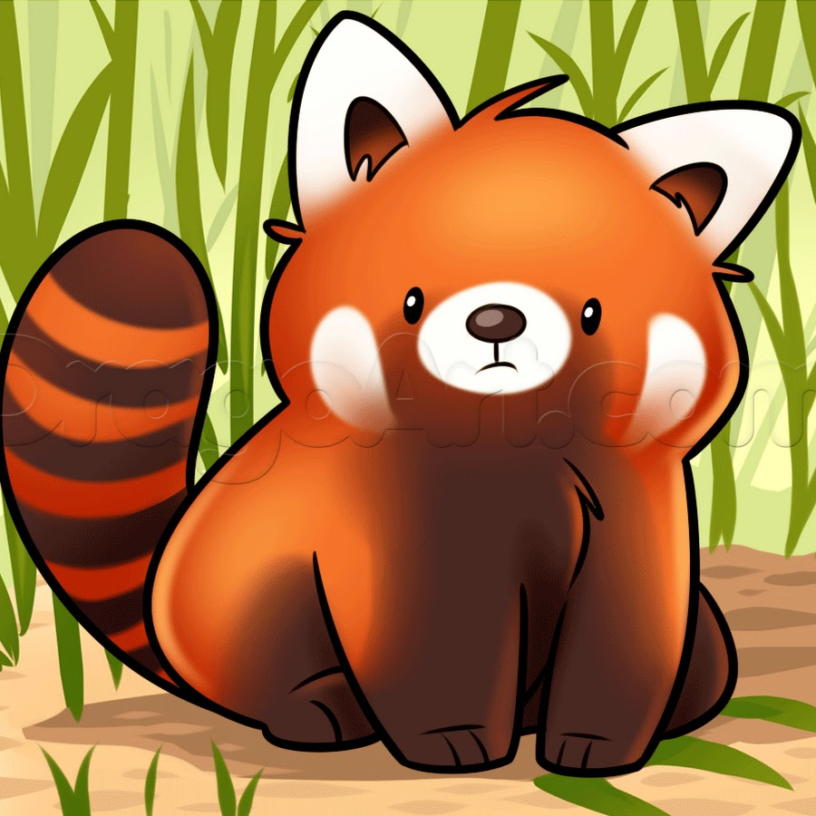

Красная и большая панды - родственники или нет?
вторник, 2 марта 2021г.
Когда-то красная панда, как и большая, принадлежала к семейству медвежьих. Однако зверек обладает признаками, которые дают возможность отнести его и к собачьим, и к енотовым, и даже к куньим.
Несмотря на название, красная панда не является близким родственником Большой панды, всем известного бамбукового медведя и символа Китая. Да, у этих животных есть общий предок, но жил он несколько миллионов лет назад. Большая и малая панды даже относятся к разным семействам.
Для красной панды долгое время не могли найти место в международной классификации животных. Сейчас этот зверек принадлежит к семейству Пандовых, в которое включены 2 вида: китайские и гималайские панды; остальные представители Пандовых вымерли.
Ученые предполагают, что дальний предок малой панды мог жить еще в эпоху миоцена. Это период, который начался 23 миллиона лет назад, а завершился 5 миллионов лет назад.
Раньше ареал обитания этих животных был намного шире. Зверьков из семейства Пандовых можно было встретить во многих областях материка Евразия, ископаемые останки малой панды обнаружены исследователями даже в Великобритании, следы ее существования замечены и в Северной Америке.
redbookОдна панда хорошо, а две - лучше))
Комментарии

Всю жизнь думал, что большие и малые панды довольно близки в классификации, а оно вот как оказывается... Спасибо за информацию!
3 марта 2021г.Это рыжее животное - панда?! Да быть такого не может!!!
3 марта 2021г.Как же я люблю панд! Спасибо за новую информацию))
4 марта 2021г.